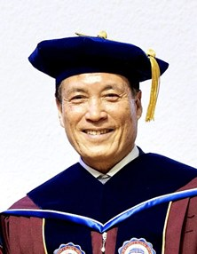
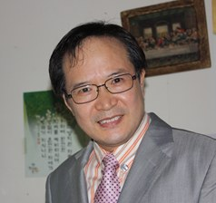
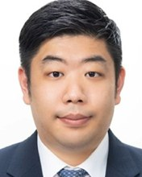

The Trinity Global University was founded in the year of 2020 by the grace of God, for training and equipping the church leaders and gospel workers around the world to accomplish the vision of world evangelization.
TGU ministry can be a good opportunity for the Korean missionaries in many countries and Korean churches to produce strong and healthy native church leaders by sharing mutual ministry experiences.

TGU's ministry team and professors are based on evangelical theology.
Profound pastoral experience and overseas missionary careers shape what we teach.
Our team has passion and enthusiasm for soul winning and for raising faithful gospel ministers.
Inauguration and Installation Service held at Songwol Presbyterian Church.
Honorary doctorate degrees are conferred.
Second anniversary celebration and honorary doctorate conferment service, with the Fall Semester Doctoral Integrated Seminar at Songwol Presbyterian Church.
Dr. Chun, Moo-Yup begins serving as president of TGU.
Doctoral program graduates receive their degrees.
Honorary doctorate conferment.




| Name | Degree | Institution | Position |
|---|---|---|---|
| Dr. John Y. Kim | Ph.D. | Netherlands Free University | International Chancellor of CCGU |
| Dr. David C. Jun | D.Miss. | Fuller Theological Seminary | President of KHE |
| Dr. Chun, Moo-Yup | Ph.D. | Trinity Global University | President of TGU |
| Dr. Paul J. Lim | Ph.D. | Trinity Global University | Vice President of TGU |
| Dr. Lee, Gun-Young | D.D. | Trinity Global University | Emeritus Pastor, Second Presbyterian Church |
| Dr. Park, Sam-Yeol | Ph.D. | Trinity Global University | Emeritus Pastor, Song-Wol Presbyterian Church |
| Dr. Cho, Joong-Eun | D.D. | Trinity Global University | Emeritus Pastor, New Light Methodist Church |
| Dr. Shin, Yong-Dae | D.D. | Trinity Global University | Pastor, Heaven Dream Methodist Church |
| Dr. Yu, Sung-Joon | D.Min. | Gerret University | President of Korea Saint Training Institute |
| Dr. Benjamin Y. Lee | Ph.D. | Fuller Theological Seminary | Professor, Sudo International University |
| Dr. John S. Hong | Ph.D. | Boston University | Distinguished Professor, Asbury Theological Seminary |
| Dr. Won, Dong-Hyun | Ph.D. | KAIST | Chairman, National Future Education Committee |
| Dr. Ha, Gui-Ho | D.Min. | Westminster Seminary | Former Board Chairman of GMS |
| Dr. Kim, Gil-Soo | Ph.D. | Westminster Seminary | Pastor, Love of the Lord Jesus Church |
| Dr. Park, Chun-Sik | D.Min. | CCGU | President of Korea International Student Mission |
| Dr. Jung, Oh-Sang | Ph.D. | Philippines University | Dean of Trinity Global Academy |
| Dr. Lee, Seong-Sang | Ph.D. | Asia Seminary of Leadership | President of Harvest University |
Your prayers and support for TGU ministries help us raise faithful gospel ministers with a burning heart for world evangelization.
Contact TGU